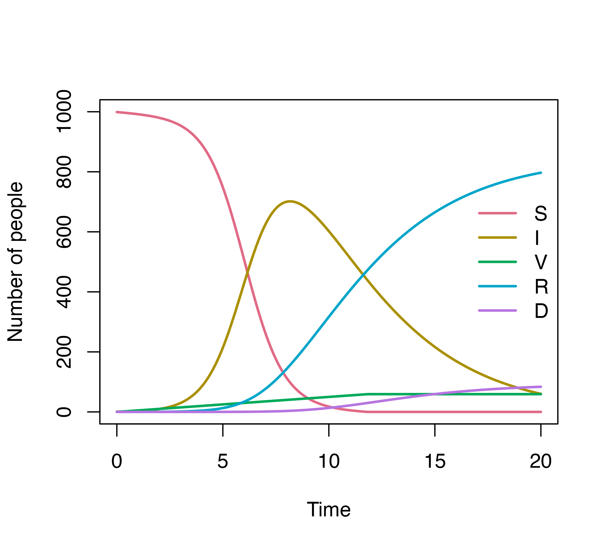
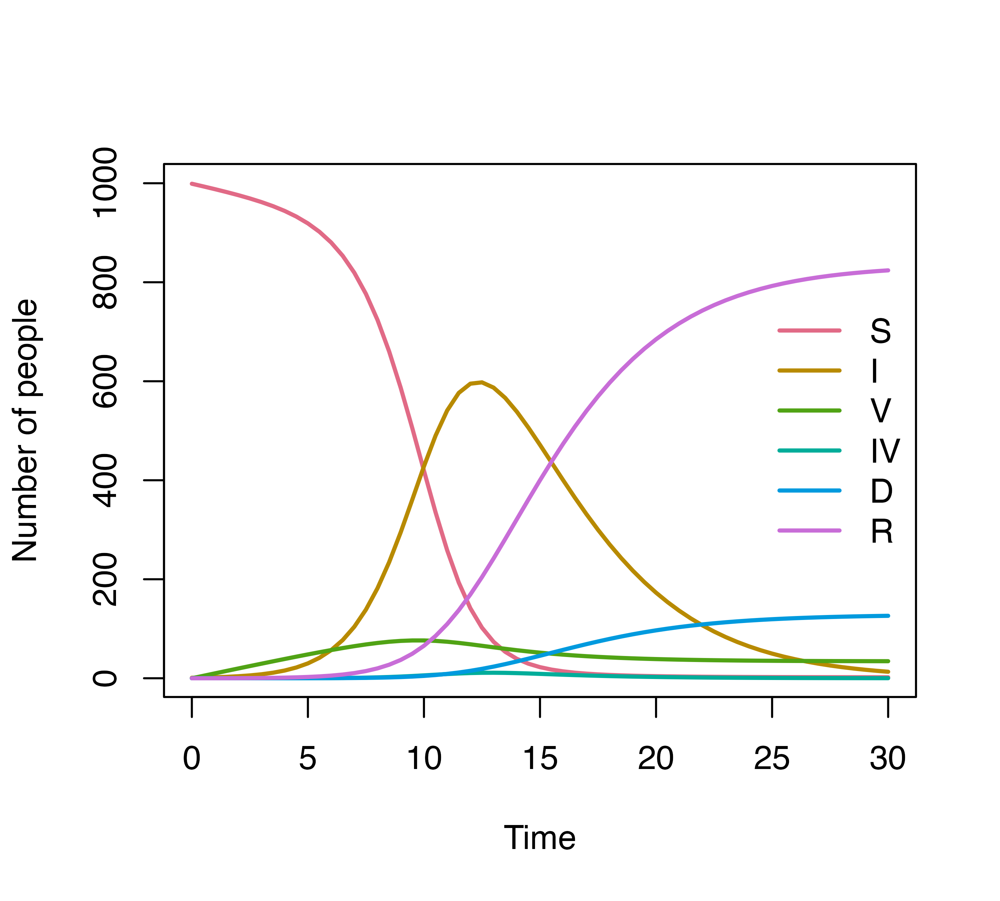
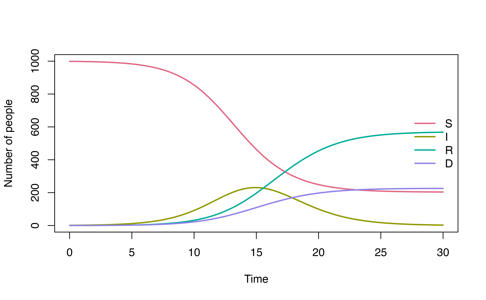

1. Simple SIR model with gamma distributed lengths of stay
The SIR model uses 3 compartments: S (susceptible), I (infected), R (recovered) to describe clinical status of individuals. We use the simplest form of SIR model to demonstrate how to define the distribution of the lengths of stay distribution.

The model equations are:
\[\frac{dS(t)}{dt} = -\lambda S(t) = -\frac{\beta I(t)}{N}S(t)\] \[\frac{dI(t)}{dt} = \frac{\beta I(t)}{N}S - \gamma I(t)\] \[\frac{dR(t)}{dt} = \gamma I(t)\]
- \(N\): total population size, \(N = S + I + R\)
- \(\beta\): the product of contact rates and transmission probability; usually we define \(\lambda =\frac{\beta I(t)}{N}\) as the force of infection
- \(\gamma\): recovery rate
For mathematical simplicity, modelers typically assume that the recovery rate \(\gamma\) is constant, this will leads to an exponentially distributed length of stay i.e most individuals recover after 1 day being infected.

A more realistic length of stay distribution can look like this, of which most patients recovered after 4 days. We defined this using a gamma distribution with shape = 3 and rate = 1/2.

The following diagram demonstrates the model with a more realistic dwell time. The dashed arrow indicates transition described by dwell time distribution, while the solid arrow indicates transition rate.

Model specification
Model transition
We have two transitions S -> I and
I -> R in this case. The transitions are specified in a
list follow this format "transition" = expression, of which
expression is defined with one of our functions for waiting time
distribution or a mathematical expression.
Another option to define the transitions is by using denim’s DSL. Refer to the Model definition in denim article for more information.
Initial state
Use a vector to define the compartments with their assigned names and
initial values in the format
compartment_name = initial_value:
initialValues <- c(
S = 999,
I = 1,
R = 0
)Model parameters
If we use a math expression, any symbols except the compartment names
are parameters, and would be defined by constant values. There are two
constant parameters in our example: beta and
N:
parameters <- c(
beta = 1.2,
N = 1000
)Model application
Time step specification
We run the model for 30 days and give output at 0.01 daily intervals. The default interval (time step) is 1 if not declared explicitly.
simulationDuration <- 30
timeStep <- 0.01
mod <- sim(transitions = transitions,
initialValues = initialValues,
parameters = parameters,
simulationDuration = simulationDuration,
timeStep = timeStep)
head(mod)
#> Time S I R
#> 1 0.00 999.0000 1.000000 0.000000e+00
#> 2 0.01 998.9880 1.011988 2.075536e-08
#> 3 0.02 998.9759 1.024119 1.656705e-07
#> 4 0.03 998.9636 1.036396 5.584445e-07
#> 5 0.04 998.9512 1.048819 1.322422e-06
#> 6 0.05 998.9386 1.061390 2.580605e-06
plot(mod)2. How the algorithm work?
The central idea of our algorithm is to split the compartment into a chain of sub-compartments, allowing more control over the dwell time distribution. The number of sub-compartments depends on the maximum duration an individual can stay in the compartment and the duration of time step.
At each time step, we calculate the out-going population from each sub-compartment based on the provided dwell-time distribution.
For example, if we expect a disease with a maximum 4 days of infection, and the duration of time step is 1 day, we will end up with 4 sub-compartments \(I_1, I_2, I_3, I_4\). At each time step, a proportion \(q_i\) of individuals in \(I_i\), where \(i<4\) will move to \(R\) while the remaining \(1-q_i\) will move to \(I_{i+1}\).
Assuming we want the infectious period to follow a discrete distribution \(P_I = \{p_1, p_2, p_3, p_4\}\). Our goal is to estimate \(q_{1}\), \(q_{2}\), \(q_{3}\) such that the resulting dwell time distribution matches \(P_I\).
This can be obtained by setting:
\[q_{i} = \frac{p_i}{1 - \sum_{j=1}^{i-1}p_j}\]
The following diagram illustrates the flow between sub-compartments. Note that all individuals in \(I_4\) will transition to \(R\) (i.e., \(q_4 = 1\))

For a given dwell-time distribution, we identify the maximum length
of stay using its cumulative distribution function. Because cumulative
distribution function is asymptotic to 1, we need to set a value that is
acceptable to be rounded to 1. If we want a cumulative probability of
0.999 to be rounded as 1, we set the error tolerance threshold as
1 - 0.999 = 0.001 (specified by the argument
errorTolerance = 0.001). The time when cumulative
probability = 0.999 will be set as the maximum length of stay of the
compartment. Default errorTolerance of denim
is set at 0.001.
Initialize population in sub-compartments
By default, the initial population is always assigned to the first
sub-compartment (for example, if the initial value for I compartment is
I = 1, denim will initialize I1 = 1 while
I2 = I3 = I4 = 0).
User can also choose to distribute initial population across
sub-compartments based on the specified distribution, i.e. with initial
population I = n, then denim will initialize
I1 = n*p1, I2 = n*p2, I3 = n*p3,
I4 = n*p4. To set up the initial population in this way,
simply specify the parameter dist_init = TRUE (only
applicable for distribution transitions).
3. Waiting time distribution
denim offers 2 ways to define a transition: either by a
waiting time distribution in the origin compartment, or by a
mathematical expression of the outgoing rate of the origin
compartment.
Current available distributions in this package including:
d_exponential(rate): Discrete exponential distribution with parameterrated_gamma(rate, shape): Discrete gamma distribution with parametersrateandshaped_weibull(scale, shape): Discrete Weibull distribution with parametersscaleandshaped_lognormal(mu, sigma): Discrete log-normal distribution with parametersmuandsigmanonparametric(waitingTimes): A vector of values, could be numbers, percentages, density of the length of stay based on real data,denimwill convert it into a distribution. These values should: (i) corresponding to 1 time step, (ii) be chronologically ordered according to the dwell-time.
Mathematical expression: Transition can also be described using a
math expression such as beta * S * I / N. You will need to
define parameters that are not compartment names in the
parameters argument
4. Multiple transitions from a compartment
In denim, transitions between one compartment to
multiple compartments are modeled as either (i) multinomial transition
or (ii) competing risks.
Consider this example:
There are two scenarios in this example:
Susceptible individuals can be infected or vaccinated. The assumption here is they will be infected first (
S -> I), and then the rest of them who were not infected will get vaccinated (S -> V).Infected individuals can recover or die. If the mortality probability is known, we can implement it into the model. For example, here, we specify that 90% of the infected individuals will recover (sub-population \(I_R\)) and 10% will die (sub-population \(I_D\)). By doing so, we ensure that the mortality probability is 10%, while also define the length of stay of individuals at the infected state before recover or die follows gamma or log-normal distribution, respectively.
We can define the model for this example as follows:
transitions <- denim_dsl({
S -> I = beta * S * I / N
S -> V = 5
0.9 * I -> R = d_gamma(1/3, 2)
0.1 * I -> D = d_lognormal(2, 0.5)
})
initialValues <- c(
S = 999,
I = 1,
R = 0,
V = 0,
D = 0
)
parameters <- c(
beta = 1.2,
N = 1000
)
simulationDuration <- 20
timeStep <- 0.01
mod <- sim(transitions = transitions,
initialValues = initialValues,
parameters = parameters,
simulationDuration = simulationDuration,
timeStep = timeStep)
head(mod)
#> Time S I V R D
#> 1 0.00 999.0000 1.000000 0.00 0.000000e+00 0
#> 2 0.01 998.9380 1.011983 0.05 4.988889e-06 0
#> 3 0.02 998.8759 1.024099 0.10 1.997100e-05 0
#> 4 0.03 998.8136 1.036349 0.15 4.499986e-05 0
#> 5 0.04 998.7512 1.048736 0.20 8.012994e-05 0
#> 6 0.05 998.6886 1.061259 0.25 1.254167e-04 0
plot(mod, ylim = c(0, 1000))
For a more detailed explanation for transitions to multiple states, refer to this article
5. Additional examples
Example 1

transitions <- denim_dsl({
S -> I = beta * S * (I + IV) / N
S -> V = 2
0.1 * I -> D = d_lognormal(mu = d_mu, sigma = d_sigma)
0.9 * I -> R = d_gamma(rate = r_rate, shape = r_shape)
V -> IV = 0.1 * beta * V * (I + IV) / N
IV -> R = d_exponential(iv_r_rate)
})
initialValues <- c(
S = 999,
I = 1,
R = 0,
V = 0,
IV = 0,
D = 0
)
parameters <- c(
beta = 1.2,
N = 1000,
d_mu = 2,
d_sigma = 1/2,
r_rate = 1/3,
r_shape = 2,
iv_r_rate = 2
)
simulationDuration <- 20
timeStep <- 0.01
mod <- sim(transitions = transitions,
initialValues = initialValues,
parameters = parameters,
simulationDuration = simulationDuration,
timeStep = timeStep)
plot(mod)
head(mod)
#> Time S I V IV D R
#> 1 0.00 999.0000 1.000000 0.00000000 0.000000e+00 0 0.000000e+00
#> 2 0.01 998.9680 1.011983 0.02000000 0.000000e+00 0 4.988889e-06
#> 3 0.02 998.9359 1.024099 0.03999998 2.428759e-08 0 1.997100e-05
#> 4 0.03 998.9036 1.036350 0.05999993 7.296813e-08 0 4.500034e-05
#> 5 0.04 998.8712 1.048738 0.07999985 1.461546e-07 0 8.013186e-05
#> 6 0.05 998.8386 1.061263 0.09999975 2.439677e-07 0 1.254215e-04Example 2

Assuming we have the distribution of time for the infected to recover (\(P_{IR}\)) as followed
timestep <- 0.05
plot(seq(0, by = 0.05, length.out = length(ir_dist)),
ir_dist,
type = "l", col = "#374F77", lty = 1, lwd = 3,
xlab = "Length of stay (days)", ylab = "", yaxt = 'n')
This distribution can be used directly for modeling with the
nonparametric() function. Note that when using
nonparametric(), we must define the simulation
timeStep to match the time resolution of the distribution
data.
For example, the provided distribution is given with the interval of
0.05 day, we must set timeStep = 0.05.
transitions <- denim_dsl({
S -> I = beta*I/N*S
I -> R = nonparametric(i_dist)
I -> D = d_exponential(d_rate)
})
parameters <- list(
beta = 0.7,
i_dist = ir_dist,
d_rate = 0.1,
N = 1000
)
initialValues <- c(
S = 999,
I = 1,
R = 0,
D = 0
)
simulationDuration <- 30
timeStep <- 0.05
mod <- sim(transitions = transitions,
initialValues = initialValues,
parameters = parameters,
simulationDuration = simulationDuration,
timeStep = timeStep)
plot(mod, ylim = c(0, 1000))